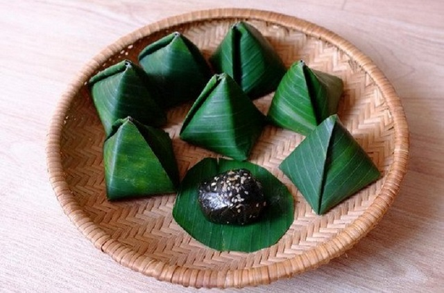

- Bánh Ít là một loại bánh rất phổ biến ở Việt Nam. Bánh thì có nhiều phiên bản khác nhau ở mỗi vùng miền, nhưng hầu hết đều được làm từ bột nếp và bột đậu xanh và được gói bằng lá gai hoặc lá chuối.
- 
Nguồn gốc của bánh Ít:
- Tương truyền rằng vào thời vua Hùng, nàng công chúa út của vua Hùng bằng sự khéo léo của mình đã sáng tạo ra một loại bánh mới mang hương vị Bánh Chưng-Bánh Giày mà Lang Liêu đã tạo ra từ trước đó.
Nàng đã lấy chiếc bánh giày bọc lấy nhân của chiếc bánh chưng tạo nên một thứ bánh mới rất hấp dẫn. Về hình dạng của bánh, nàng tạo ra một hình tam giác rồi dần dần chiếc bánh này được lan truyền trong dân gian và lấy tên của nàng út để đặt tên cho nó:”Chiếc bánh Nàng Út Ít”.
Theo thời gian, cái tên đó được giản lược thành “Bánh Ít” như ngày hôm nay.
- Bánh Ít thường được sử dụng vào những ngày giỗ ông bà, Giỗ Tổ, Chạp Mã,..
Giá trị dinh dưỡng của bánh Ít
- Bánh Ít được làm chủ yếu từ bột nếp và đậu xanh nên có hàm lượng chất dinh dưỡng rất cao, với một chiếc bánh Ít cung cấp khoảng 150 kcal( khoảng 40% năng lượng từ chất béo).
Cách làm các loại bánh Ít: